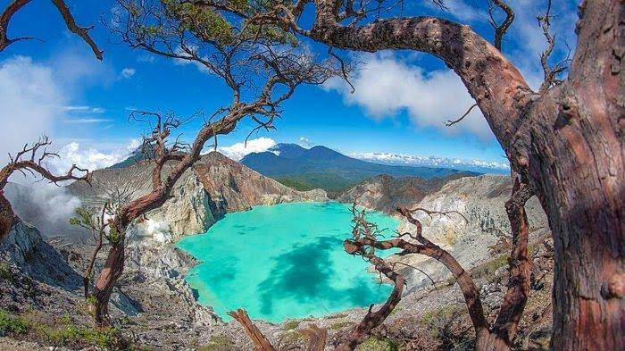
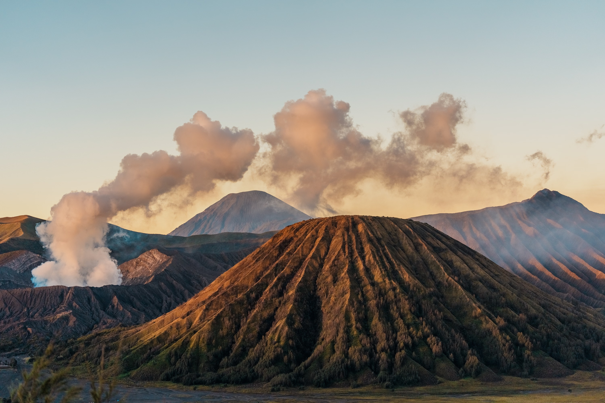
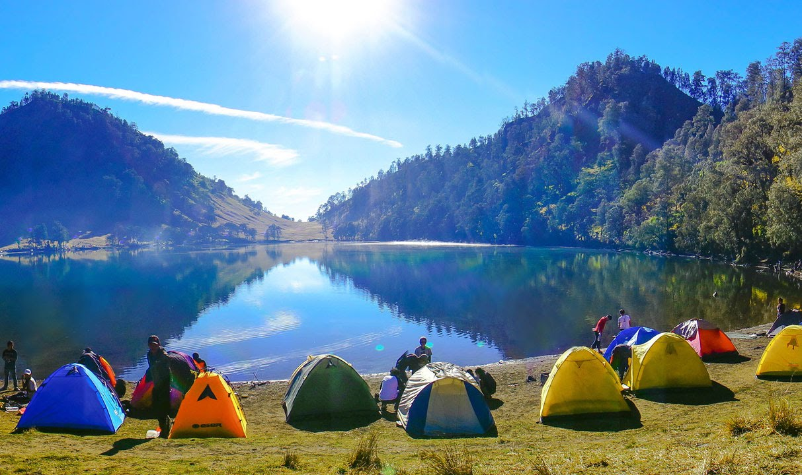

Jelajah Wisata IndonesiaTemukan Keindahan Alam dan Budaya Indonesia |
Selamat datang di website Jelajah Wisata Indonesia. Website ini menyajikan berbagai tempat wisata yang ada di Indonesia. Indonesia memiliki banyak sekali destinasi wisata mulai dari pegunungan, pantai, hingga wisata budaya.
Berikut adalah objek wisata menarik di Jawa Timur
|
 Kawah Ijen Kawah Ijen merupakan salah satu tempat wisata terkenal yang berada di jawa timur
|
 Gunung Bromo Gunung Bromo merupakan salah satu tempat wisata terkenal yang berada di jawa timur
|
 Ranu Kumbolo Ranu Kumbolo merupakan salah satu tempat wisata terindah yang berada di Jawa Timur
|
Silakan dengarkan irama musik yang melengkapi keindahan wisata Indonesia.
Silakan menonton video keindahan wisata alam dan budaya Indonesia.